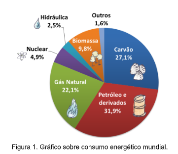
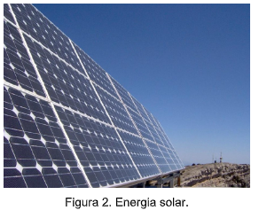
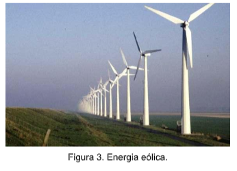
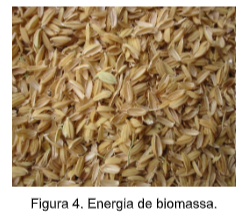
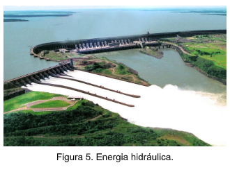

Capítulo 5
Fontes de Energia, tecnologia e a Indústria Petrolífera
De onde vem a energia que nós utilizamos? A energia pode ser obtida a partir da transformação de variados recursos, que podem ter origens diversas. As fontes de energia são extremamente importantes nas atividades humanas, pois originam combustíveis e eletricidade que servem para iluminar, movimentar máquinas, caminhões entre outras aplicações. As energias facilitam o trabalho do homem que em outras circunstâncias teria uma grande dificuldade, utiliza-se a energia para levantar peso, apertar parafuso, mover veículos, ferver água, etc. No Brasil as principais fontes de energias utilizadas são: petróleo, hidrelétrica, carvão mineral e biocombustíveis. • Petróleo: a partir desse minério fóssil são processados vários subprodutos utilizados como fonte de energia como a gasolina, óleo diesel, querosene, além de gerar eletricidade nas usinas termoelétricas. • Energia hidrelétrica: produz energia elétrica em usinas hidrelétricas, gerada a partir da movimentação de turbinas impulsionadas por água de rios acumulados em barragens. • Carvão Mineral: esse minério oferece calor para os grandes fornos contidos nas indústrias siderúrgicas e contribui para geração de eletricidade nas usinas termelétricas. 25 • Biocombustíveis: correspondem, por exemplo, ao álcool e o biodiesel, sendo o primeiro um dos principais, que desde a década de 1970 seu uso tem sido bastante difundido no Brasil como combustível em veículos automotores.
O petróleo e o gás natural ocorrem em regiões denominadas pelos geólogos (estudiosos das rochas e do solo) "bacias sedimentares", que são áreas sob a superfície terrestre que, por terem sido mais baixas e planas que o terreno em volta, permitiram o depósito de matéria orgânica, além de sedimento (fragmentos de rochas). As bacias sedimentares podem ser marinhas ou terrestres. Nessas bacias sedimentares, o petróleo e o gás natural são encontrados em poros (buracos muito pequenos) dentro de rochas sedimentares (também chamadas de rochas reservatórios).
Fonte: https://www.epe.gov.br/pt/abcdenergia/fontes-de-energiaDesenvolvimento industrial e energia
A produção de energia está estreitamente vinculada ao desenvolvimento de atividades econômicas, cuja intensificação, em decorrência das revoluções tecnológicas dos últimos três séculos. Da primeira revolução industrial até os dias de hoje, nunca tantas fontes de energia foram usadas e de maneira tão intensa. Por volta de 1750 a invenção da máquina a vapor (movida a carvão) foi um marco para o desenvolvimento industrial.
O que são energias renováveis?
São fontes naturais que se renovam continuamente na natureza, sendo, tecnicamente inesgotáveis.
Energia EólicaÉ a energia da radiação solar direta, que pode ser aproveitada para conversão em eletricidade ou calor.
Energia Eólica: “É a energia cinética das massas de ar provocadas pelo aquecimento desigual na superfície do planeta.”
Biomassa
Através da fotossíntese ou quimiossíntese, seres transformam em energia química. Esta energia pode ser convertida em: eletricidade, combustível ou calor.
Hidroenergia
Energia cinética das massas de água dos rios, que fluem de altitudes elevadas para os mares e oceanos graças à força gravitacional.
1) De acordo com o texto quais as principais fontes de energia utilizadas?
2) O que significam energias renováveis? Quais as vantagens em relação às não renováveis?
3) Analise o gráfico da página 22 e indique qual a fonte de energia mais utilizada.
1) e, d, b, c, a
2) Energias renováveis são aquelas que são praticamente infinitas e causam baixíssimo impacto ambiental. Tais como solar e eólica.
3) Petróleo e derivados